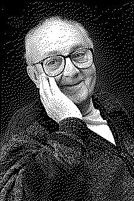

| годы жизни | 1919–2013 |
| страна | Англия · США |
| область | статистика · качество |
| главное | факторные планы · поверхность отклика · Бокс–Дженкинс |
| характер | зять Фишера · автор самой цитируемой фразы статистики |
«Все модели неверны, но некоторые полезны».
он придумал, как менять много факторов сразу — и не запутаться.
Классический опыт менял один фактор за раз: держи всё постоянным, двигай одно. Джордж Бокс показал, что это расточительно и слепо к взаимодействиям1. Факторный план меняет несколько сразу по хитрой решётке — и вытягивает из горстки опытов и сами эффекты, и их сцепления.
Дальше — поверхность отклика: не просто сравнить варианты, а нащупать, куда двигаться, чтобы стало лучше. Опыт превращается в навигацию по ландшафту, а не в единичную проверку гипотезы.
«Все модели неверны, но некоторые полезны.» — Джордж Бокс
Эта фраза2 — его, и она стала девизом всей прикладной статистики. Модель не обязана быть истинной; она обязана быть полезной для решения. Трезвость вместо погони за идеальной формулой.
Бокс был зятем Фишера и прямым наследником его линии эксперимента, но развернул её к промышленности и качеству: как ставить опыты там, где каждый прогон стоит денег. Для многофакторного A/B и оптимизации это фундамент.